스킬을 더 깔아도 안 통하는 이유
영상은 흔한 광고 문구부터 짚어요. 화면에 경고 표시와 함께 '이 스킬 하나면 끝', '마법의 스킬 10개', '설치만 하면 자동화' 세 줄이 차례로 쌓여요. 인플루언서들이 계속 이런 식으로 스킬을 소개한다는 거예요.
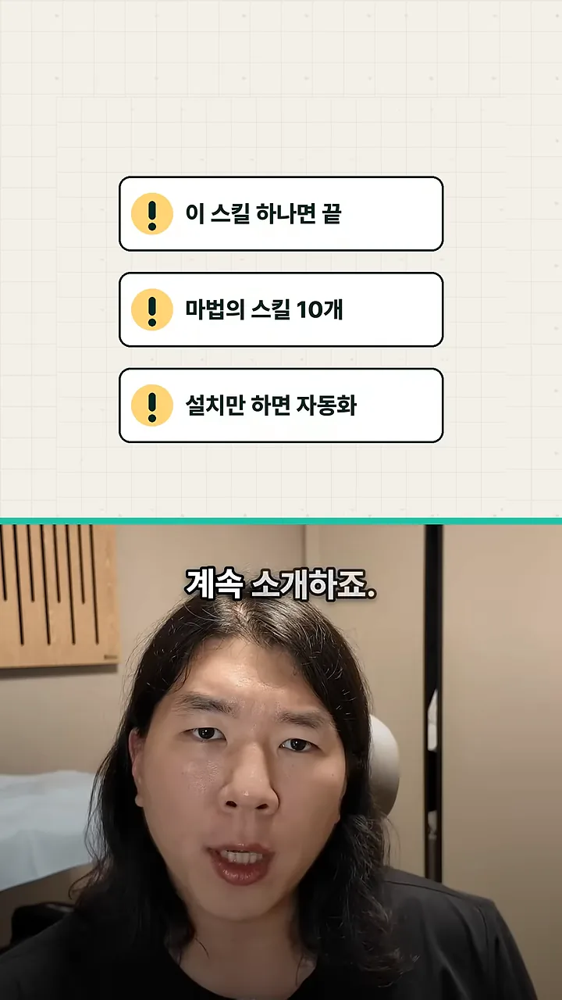
막상 깔아 보면 에이전트는 여전히 말을 안 들어요. 아래 화면은 설치한 스킬 스무 칸 중 절반이 회색 '안 씀'으로 바뀐 모습이에요. 설치한 스킬의 절반은 쓰이지도 않는다는 뜻이에요.
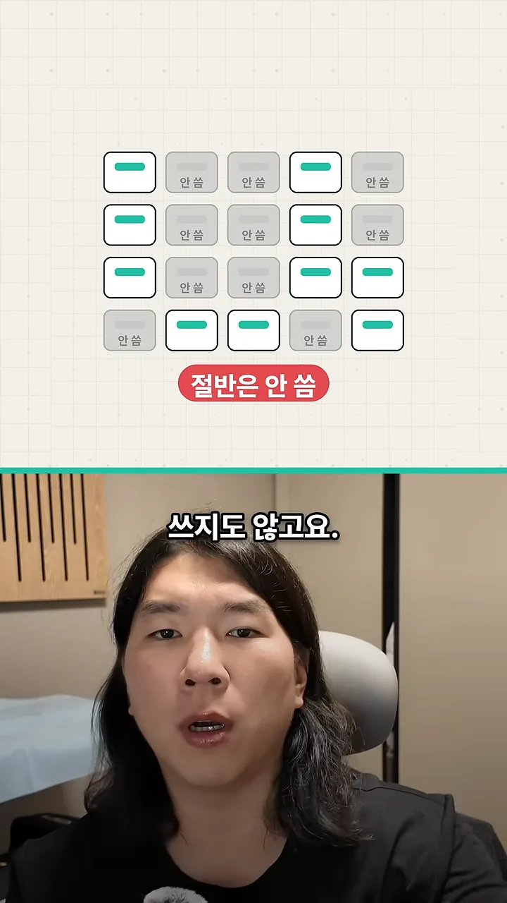
모델이 스킬보다 빨리 좋아져요
이유는 속도 차이예요. 화면의 막대 두 개 중 '모델' 막대는 끝까지 차고, '스킬' 막대는 앞부분만 조금 찼어요. 모델이 좋아지는 속도가 사람들이 스킬을 만드는 속도보다 빠르다는 그림이에요.
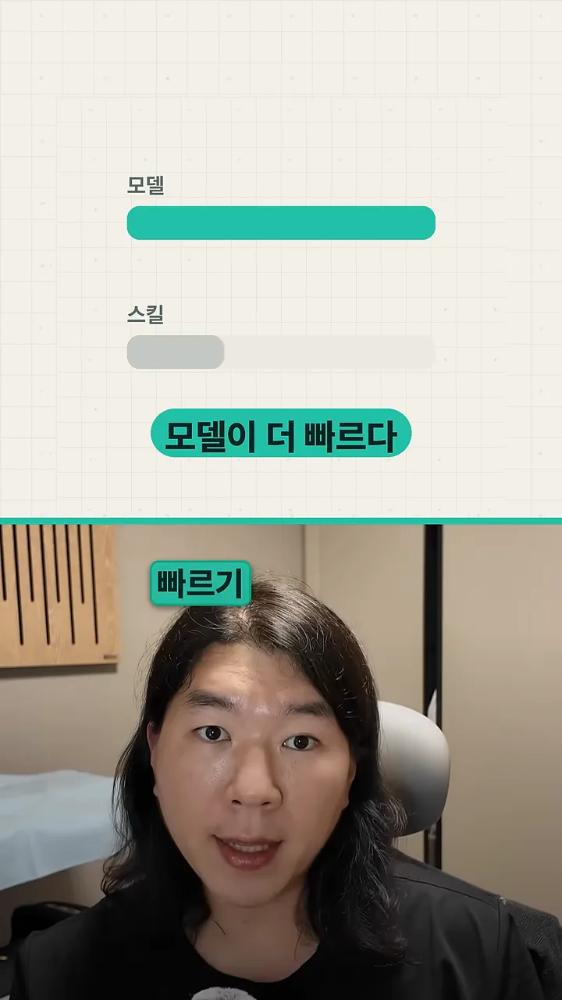
그래서 설치된 스킬 대부분은 이미 사라진 문제를 고치고 있어요. 화면 예시는 '긴 문서는 나눠서 읽게 하기', '코드 블록 형식 지키게 하기', '단계별로 생각하게 하기' 세 가지예요. 셋 다 줄이 그어지고 '이미 해결' 도장이 찍혀요.
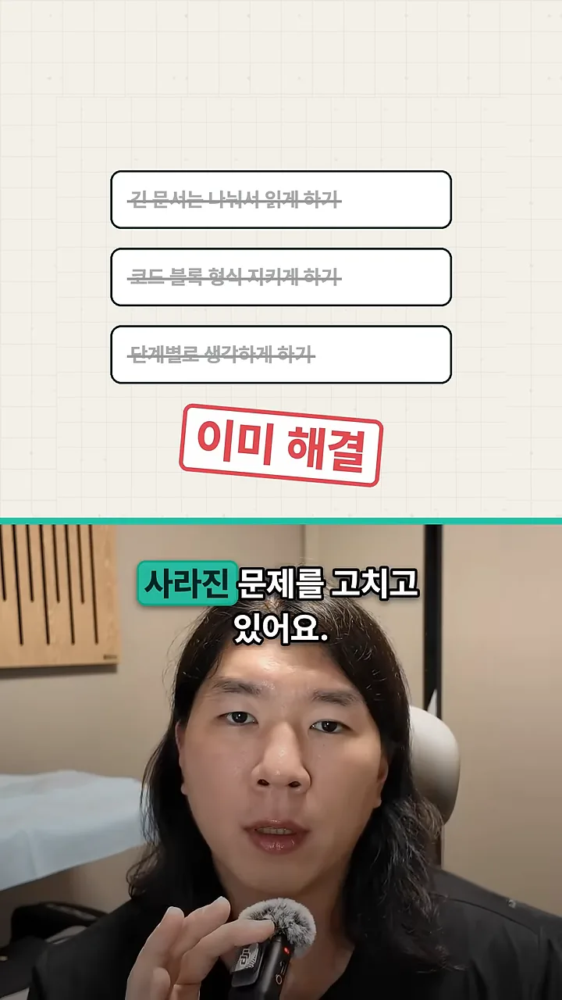
세팅이 무거우면 지시가 묻혀요
영상은 앤트로픽 쪽 근거로 Claude Code 공식 문서(출처: code.claude.com)의 'Best practices for Claude Code'를 보여 줘요. 노란 칸의 인용은 '비대한 CLAUDE.md 파일은 Claude가 정작 중요한 지시를 무시하게 만든다'는 뜻이에요. 그 아래 빨간 글씨로 '세팅이 비대하면 지시를 무시한다'고 정리했어요.
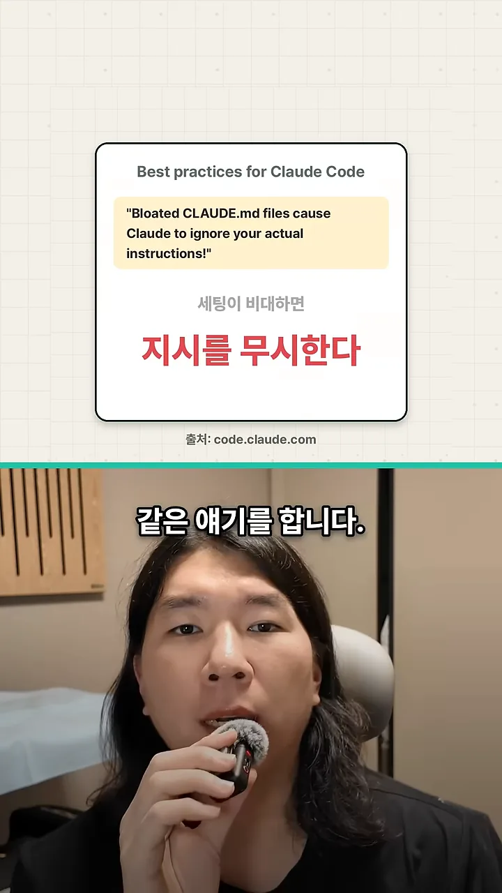
화면 속 CLAUDE.md는 334줄에서 420줄로 불어나요. 그 사이에 흐릿하게 '결론부터 말하기'라는 줄이 보이는데, 이렇게 긴 파일 속에 들어간 지시는 묻히기 쉽다는 장면이에요.

그래서 AI(Artificial Intelligence)를 가장 잘 쓰는 사람들은 스킬을 걷어내고 가벼운 세팅을 다시 만든다고 해요. 화면의 '가벼운 세팅' 카드에는 세 가지가 적혀 있어요. 다섯 줄짜리 CLAUDE.md, 템플릿 폴더, 내 일하는 방식이에요. 다음 섹션의 프롬프트 세 개가 이 셋을 하나씩 만들어요.
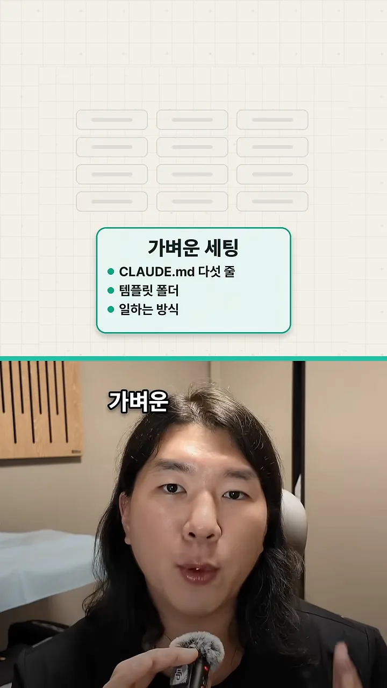
가벼운 세팅을 만드는 프롬프트 세 개
먼저 큰 그림부터 볼게요. 프롬프트 세 개는 각각 가벼운 세팅의 한 부분을 만들어요. 결과물은 모두 폴더와 CLAUDE.md 안에 남아요.
프롬프트 1: 세팅 점검과 파일 구조
스킬을 또 깔기 전에 쓰는 프롬프트예요. 화면 카드의 제목은 '세팅 점검 + 파일 구조'예요. 지금 깔린 것들을 감사해서 낭비를 잘라내고, 에이전트가 찾기 쉽게 파일 구조를 다시 짜는 게 목적이에요.
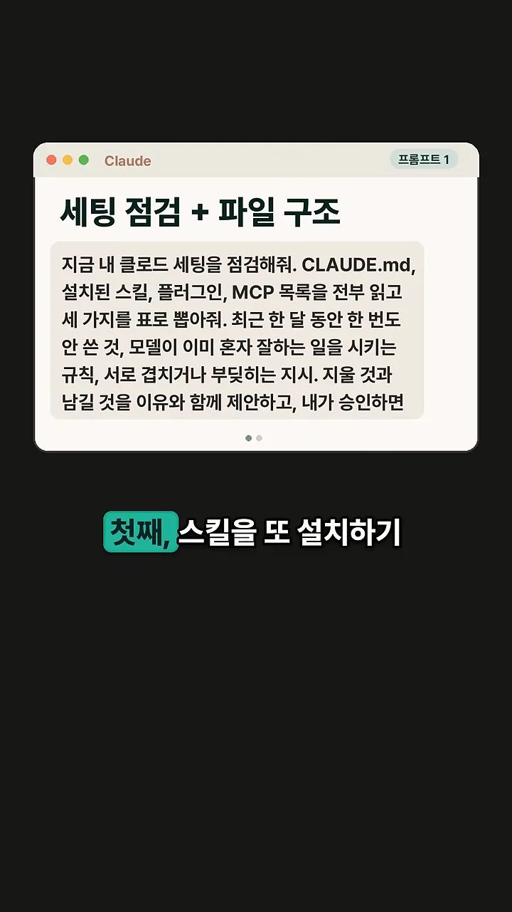
두 장에 걸친 프롬프트 전문은 이래요. 핵심은 지우기 전에 표로 보여 주고, 내가 승인한 것만 지우게 한다는 점이에요.
지금 내 클로드 세팅을 점검해줘. CLAUDE.md, 설치된 스킬, 플러그인, MCP 목록을 전부 읽고
세 가지를 표로 뽑아줘. 최근 한 달 동안 한 번도 안 쓴 것, 모델이 이미 혼자 잘하는 일을
시키는 규칙, 서로 겹치거나 부딪히는 지시. 지울 것과 남길 것을 이유와 함께 제안하고,
내가 승인하면 지워. 그다음 내 일에 맞게 폴더 구조를 다시 짜고, 어디에 뭐가 있는지
CLAUDE.md 맨 위에 다섯 줄로 적어줘.결과로 나오는 폴더 예시가 아래 화면이에요. 내-일/ 아래에 지도 다섯 줄짜리 CLAUDE.md, 그리고 projects/, templates/, notes/, archive/ 네 폴더가 있어요.

프롬프트 2: 반복 작업 템플릿
두 번째 프롬프트는 내가 하는 일을 전부 훑어서 반복 작업마다 템플릿을 만들게 해요. 카드 제목은 '반복 작업 템플릿'이고, 본문에 'templates 폴더'와 '순서, 결과물 형식, 잘 된 예시'가 보여요.
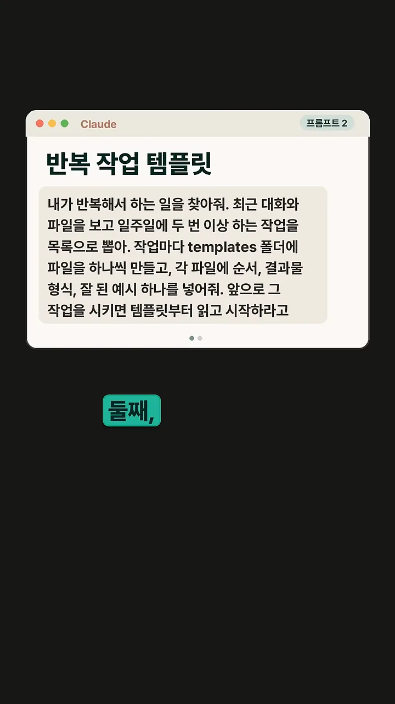
내가 반복해서 하는 일을 찾아줘. 최근 대화와 파일을 보고 일주일에 두 번 이상 하는 작업을
목록으로 뽑아. 작업마다 templates 폴더에 파일을 하나씩 만들고, 각 파일에 순서, 결과물
형식, 잘 된 예시 하나를 넣어줘. 앞으로 그 작업을 시키면 템플릿부터 읽고 시작하라고
CLAUDE.md에 한 줄 추가해.템플릿 하나는 이렇게 생겼어요. 화면의 제안서.md에는 '순서', '형식', '예시' 세 칸에 체크가 들어가 있어요. 이렇게 해 두면 에이전트가 내가 원하는 방향으로 결과를 낸다고 해요.
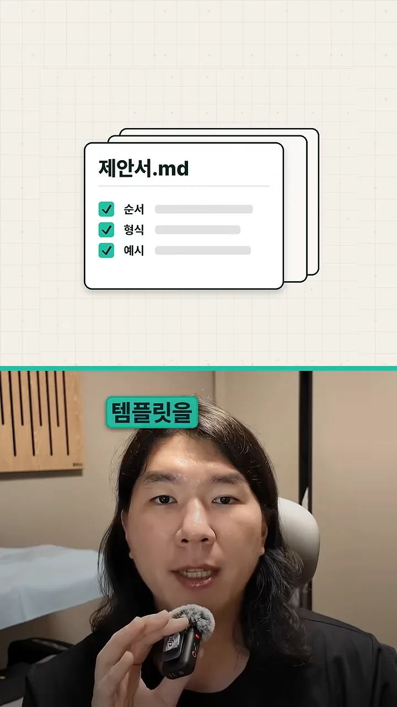
프롬프트 3: 나를 인터뷰하기
세 번째는 클로드가 나를 인터뷰하게 하는 프롬프트예요. 카드 제목은 '나를 인터뷰하기'예요. 질문을 한 번에 하나씩 받으면서 내 취향과 일하는 방식을 뽑아내요.
나를 인터뷰해줘. 한 번에 질문 하나씩, 열다섯 개까지. 결과물을 어떤 길이와 말투와 형식으로
받고 싶은지, 일할 때 싫어하는 것, 알아서 결정해도 되는 것과 꼭 물어봐야 하는 것을 알아내.
인터뷰가 끝나면 답을 열 줄 안으로 요약해서 CLAUDE.md의 '일하는 방식' 섹션에 저장해.결과 예시는 '일하는 방식' 카드 네 줄이에요. '결론 먼저, 이유는 뒤에', '모르면 추측 말고 묻기', '짧게', '보고는 숫자로'예요.
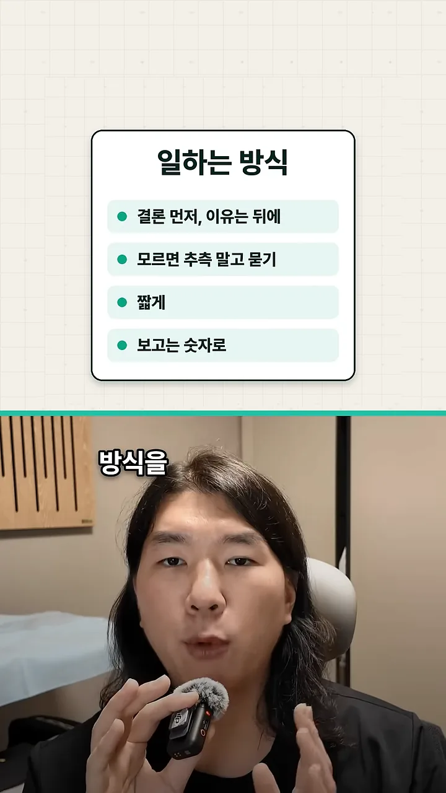
틀릴 때는 스킬 대신 구조를 고쳐요
마지막 조언은 습관에 관한 거예요. 화면에서 '틀렸다' 표시 아래 '+ 새 스킬 설치'에 빨간 줄이 그어져요. 에이전트가 틀릴 때마다 스킬을 하나씩 더 까는 습관을 버리라는 뜻이에요.
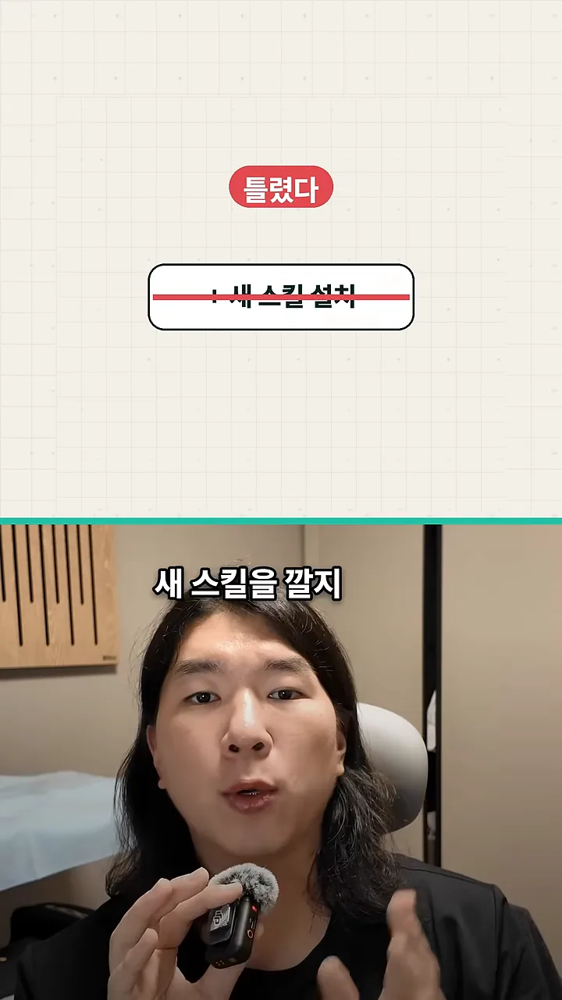
대신 에이전트가 딛고 선 구조를 고쳐요. 화면은 그 구조를 두 층으로 그려요. 아래층이 CLAUDE.md, 위층이 '폴더'예요. 영상은 이렇게 하면 모델이 바뀌어도 더 빠르고 토큰도 덜 쓴다고 해요.
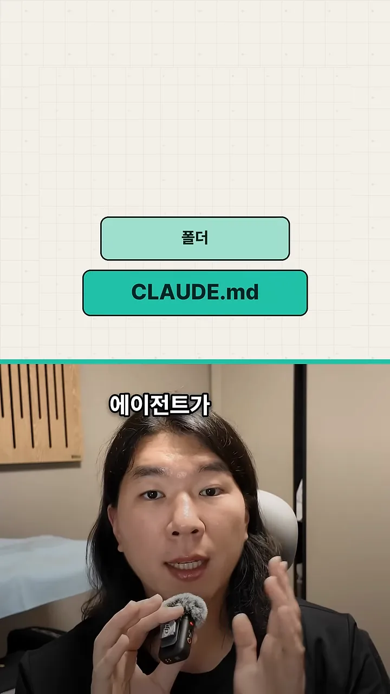
그렇다고 정말 다 지우라는 얘기는 아니에요. 화면의 격자에서 대부분 칸은 비어 있고 초록 칸 다섯 개만 남아요. 위에 '잘 되는 것만'이라고 적혀 있어요. 안 쓰는 스킬 40개 대신 잘 작동하는 것만 남기라는 거예요.
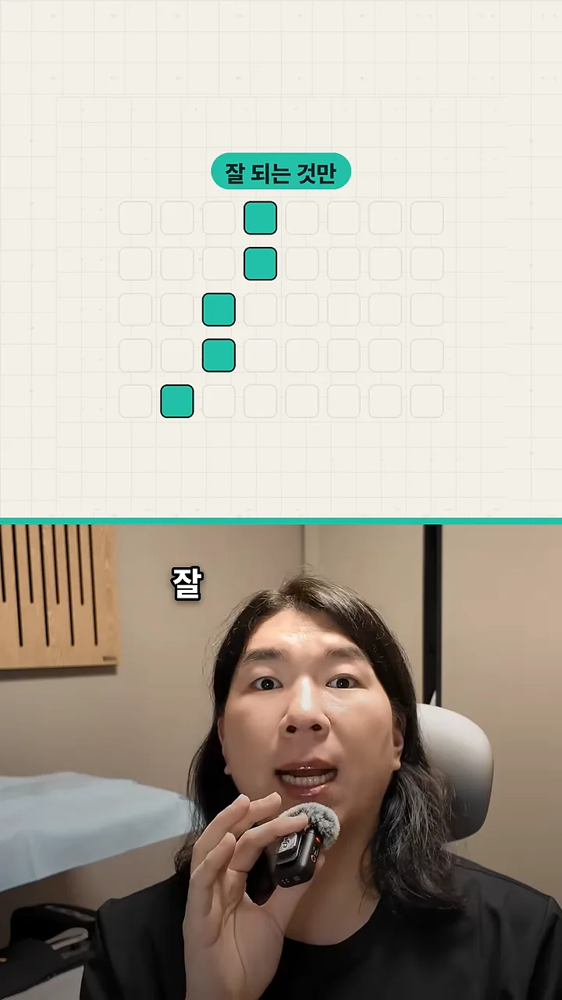